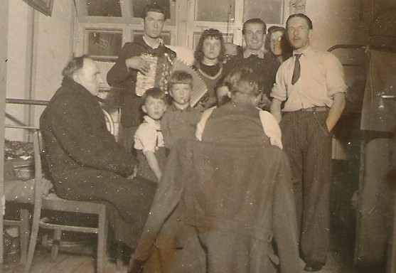

Some Photos of the last Generation of The Tricys Family
Photos of the last generation of my branch of the Tricys Family
These photos, dating back from 1940 were scanned in 2007 from my aunt Ramune Kelecius’ collection, in Chicago Illinois
This photo would have been taken in Lithuania near the end of the war or shortly after)
(Judging from the age of the children, one of whom is my father, and his features, the man on the right is my grandfather Jonas Tricys)

This is my late grandfather, Jonas Tricys. He was a police officer in Lithuania before the war.
Shortly before Germany’s invasion of Lithuania and Latvia, he joined the resistance. After capture, he chose enlistment. Fortunately for me, this turned out to be the livelier option. They marched on Moscow, but escaped the German army. They were then captured by the Russians, and sent against the Germans. They then escaped the Russians, and as the German campaign dissolved joined the westward route. Jonas was able to return to Lithuania, and finding all the families assets taken, was able to collect the family and begin the trek to German ports, where they would board ships to America.
This is Delfina, wife to Jonas Tricys, Grandmother to Yuri Tricys
Alfred Tricys

Alfred Tricys

Alfred Tricys

Jonas and Delfina Tricys

Officer Jonas Tricys
Jonas and dukre
My Great Grandparents (Delfina’s parents)

Jonas Tricys wood carvings

Jonas Tricys wood carvings

Grandfather, father, and aunt

Grandfather and father
More of Grandfather’s art

More of Grandfather’s art

Alfred Tricys at school

Father and Aunt

Alfred Tricys, Coming to America

Me - Yuri Tricys - Winter, 2020